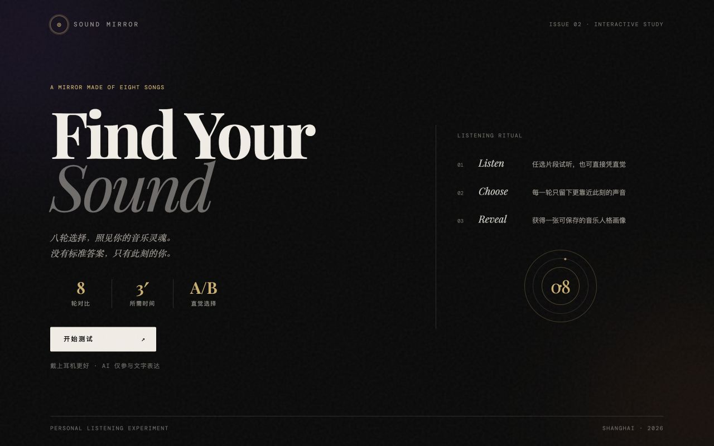
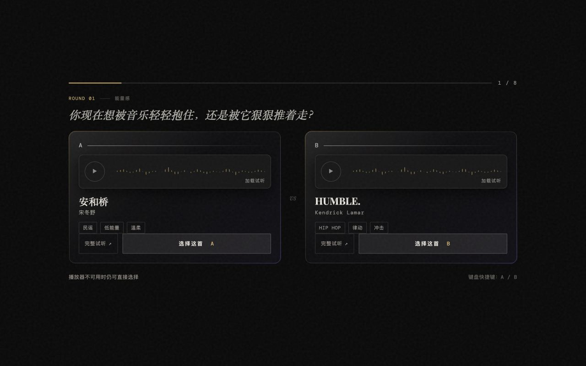
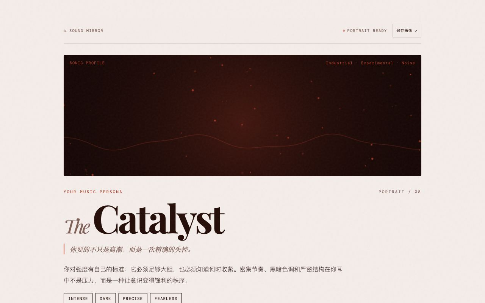
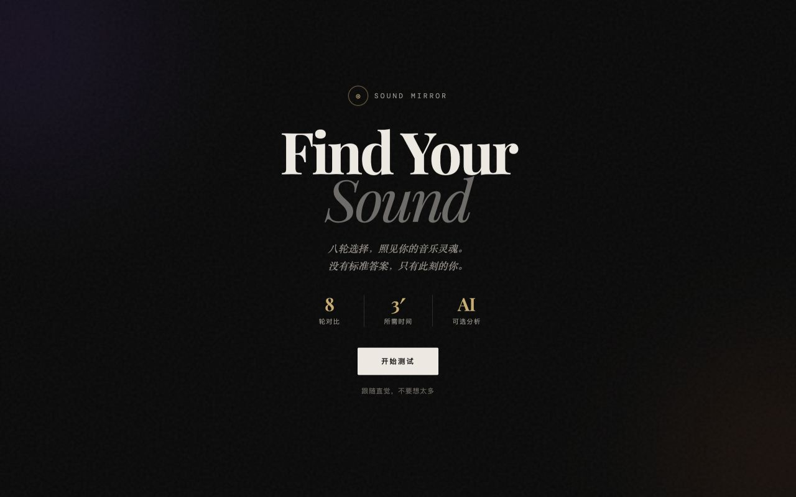
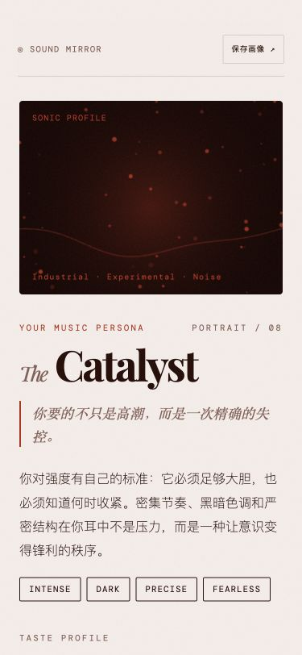

Every option carries three values.

The experience
Music taste as a decision,
not a questionnaire.
Sound Mirror's judgement core is deterministic: eight choices map through a rule engine to three coordinates, while AI only rewrites how results are expressed and can never alter a score. Without an API, the experience still completes.
Instead of asking users to describe an abstract self, it asks them to listen and choose between eight concrete pairs. Three minutes later, choices combine into a portrait, reasons, and recommendations that can be saved and questioned.
- Role
- Independent concept, interaction, visual design, and front-end build.
- Constraint
- Generated language cannot alter scoring or become a completion dependency.
- Current evidence
- Live v1.0; exhaustive checks of 256 A/B rule combinations.
- Unknown
- Coordinate comprehension, perceived fit, explanation trust, and cultural coverage.


Enter a listening state. Headphones, time, and interaction expectations are explicit.
Eight concrete decisions. Listening and choosing remain separate actions.
A portrait with receipts. Coordinates, key choices, and reasons remain inspectable.
The mechanism
AI writes expression.
It cannot change judgement.
The scoring layer is deterministic. AI may rewrite the portrait name and explanation, while local fallback preserves the complete experience when the model is unavailable.
Eight answers produce 0–100 coordinates.
Coordinates select a portrait; salient choices explain it.
Three decisions
Concrete over abstract
Use sound choices instead of asking users whether they identify with an abstract music trait.
Explain before impress
Return influential choices and reasons, not only a memorable label.
Graceful without AI
Generated expression is an enhancement layer; fallback still completes the portrait.
Two versions,
two evidence strengths.
Current changes come from build constraints and design inspection, not participant findings. Only the next iteration may claim a user-testing cause.

The live version clarifies headphones, time, and the choice model. This remains a hypothesis until tested.
Coordinate comprehension, result fit, and abandonment can only drive a published change after 5–8 real sessions.

Moderated test / Phase 1 gate
The protocol is ready.
The results have not happened.
Pending real participants · target 5–8 sessions
Current reflection
It is a working product.
It is not yet a research finding.
What the build proves
The experience loop, deterministic score, fallback, and export work; all 256 rule combinations were exhaustively checked.
What remains unknown
Cultural fairness, coordinate coverage, and whether the portrait feels and reads as credible require real participants.